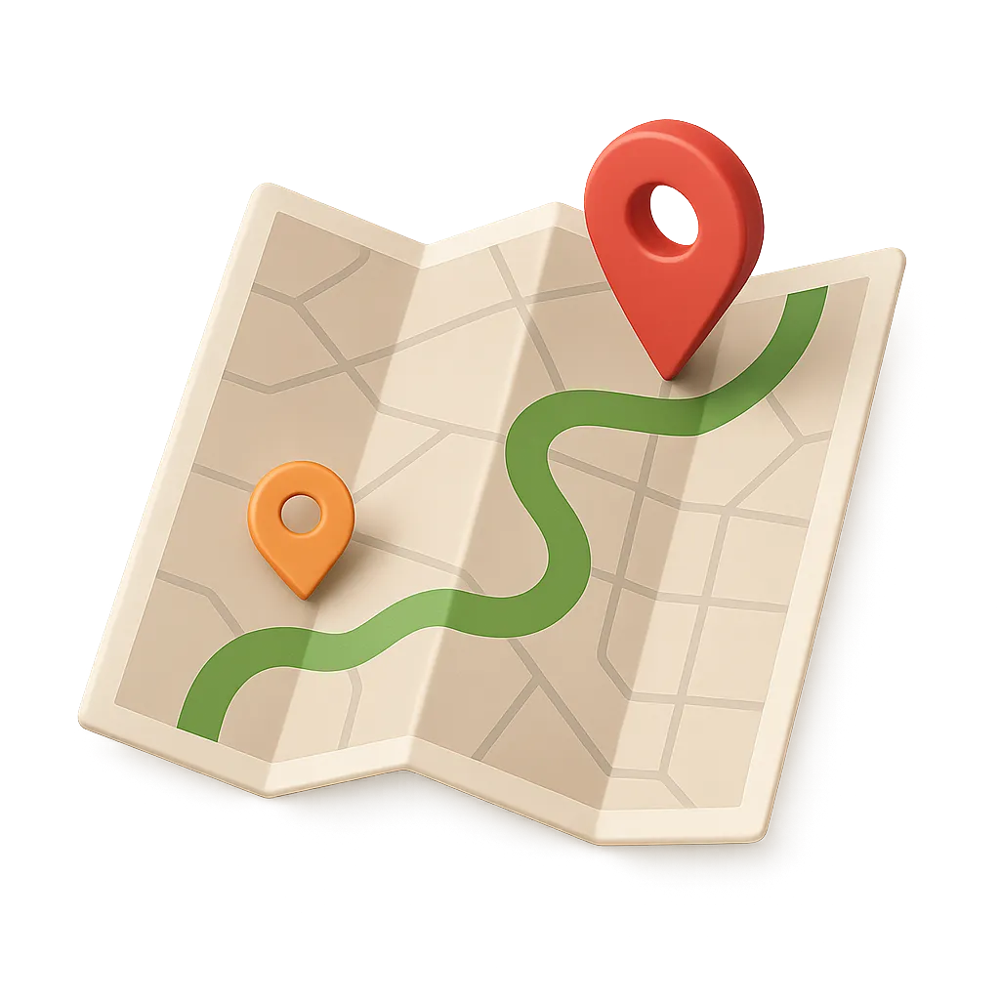
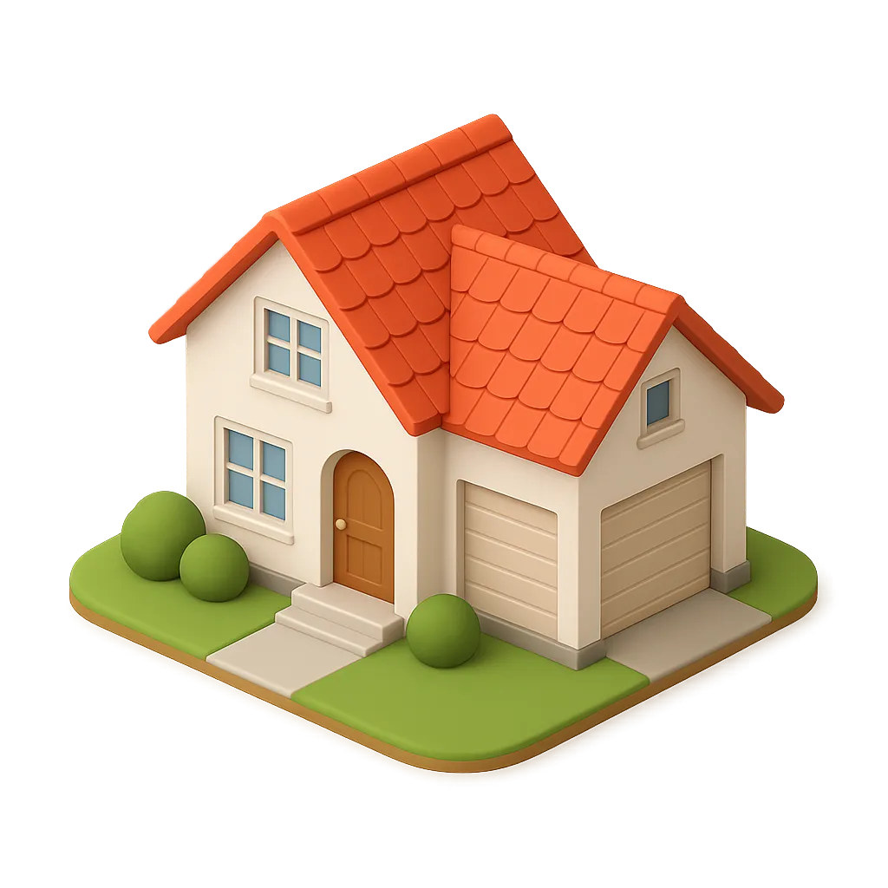
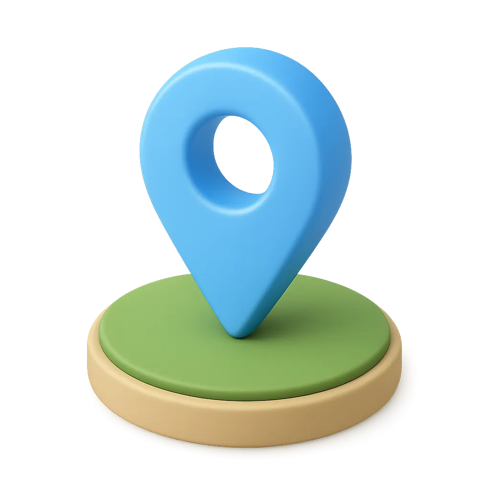

Manual de Usuario
Guía práctica para navegar el sitio web de Óptica Nur.
 Navegación del Sitio
El sitio web cuenta con dos tipos de navegación según el dispositivo:
Navegación en Escritorio
En computadoras verás el menú completo en la parte superior:
- Haz clic en cualquier opción del menú para ir de una sección a otra
- El enlace de la página activa se resalta con color azul
Navegación en Móvil
En tablets y teléfonos verás un icono de hamburguesa (☰):
- Toca el icono ☰ para desplegar el menú
- Selecciona la sección que deseas visitar
- Toca fuera del menú o presiona la X para cerrarlo
- También puedes usar la tecla Escape para cerrar el menú


 Página de Inicio
La página principal te da la bienvenida con información general de la óptica
Parte Superior
Esta es la primera sección que verás al entrar al sitio:
- Ver Catálogo: Te lleva directamente a ver nuestros productos
- Agendar Cita: Te dirige a la página de contacto para programar una cita
Servicios Especializados
Desplázate hacia abajo para conocer todos nuestros servicios:
🕶️ Lentes de Contacto
Amplia variedad para todas las necesidades y estilos
🔬 Monturas Exclusivas
Diseños únicos que se adaptan a tu personalidad
Llamada a la Acción Final
Al final de la página encontrarás botones destacados para:
- Agendar Cita: Completa el formulario de contacto
- Llamar Ahora: Contactarnos directamente por teléfono
 Catálogo
Catálogo
En el catálogo podrás explorar todos nuestros productos:
Navegación por Categorías
- Monturas: Gran variedad de estilos y marcas
- Cristales Para diferentes necesidades visuales
Vista de Productos
- Cada producto muestra: descripción y caracteristicas

Al final del catálogo encontrarás esta sección con servicios especializados:
Servicios Disponibles
- 👁️ Examen Visual Completo - Determinamos tu graduación exacta
- 🎨 Asesoramiento de Estilo - Te ayudamos a elegir monturas
- ⚙️ Ajuste y Adaptación - Aseguramos comodidad perfecta
- Haz clic en Agendar Cita para contactarnos
Página de Contacto
Encuentra toda la información para visitarnos o contactarnos directamente.
Información de Sedes
Contamos con dos sedes en Barquisimeto:
 Sede Este
Av. Venezuela con Av. Argimiro Bracamonte, Torre Financiera, Piso 2
Horario: Lunes a Viernes 8:00 AM - 12:00 M / 1:00 PM - 4:00 PM
Sede Centro
Calle 23 con Carrera 18, Torre Financiera del Centro
Horario: Lunes a Viernes 8:00 AM - 12:00 M / 1:00 PM - 4:00 PM
Mapas Interactivos
- Cada sede incluye un mapa interactivo de Google Maps
- Google Maps: Abre la ubicación en Google Maps
- WhatsApp: Inicia una conversación directa por WhatsApp
¿Cómo Llegar?
Información detallada sobre opciones de transporte:
- 🚗 En automóvil: Estacionamiento privado gratuito en Sede Este
- 🚌 Transporte público: Rutas disponibles para cada sede
- 🅿️ Paradas cercanas: Puntos de referencia para peatones
¿Cómo Usar Este Manual?
Este manual está diseñado para ser tu guía permanente mientras usas el sitio web:
Botón de Manual de Usuario
En todas las páginas del sitio encontrarás un botón flotante:
- Ubicación: Esquina inferior derecha de la pantalla
- Función: Abre este manual en una nueva pestaña
- En móvil: Se adapta al tamaño de la pantalla
¿Necesitas Más Ayuda?
Si después de consultar este manual aún tienes preguntas:
Escríbenos por WhatsApp para respuestas rápidas
📍 Visítanos
Ven a cualquiera de nuestras sedes para atención presencial
¡Gracias por elegir Óptica Nur!